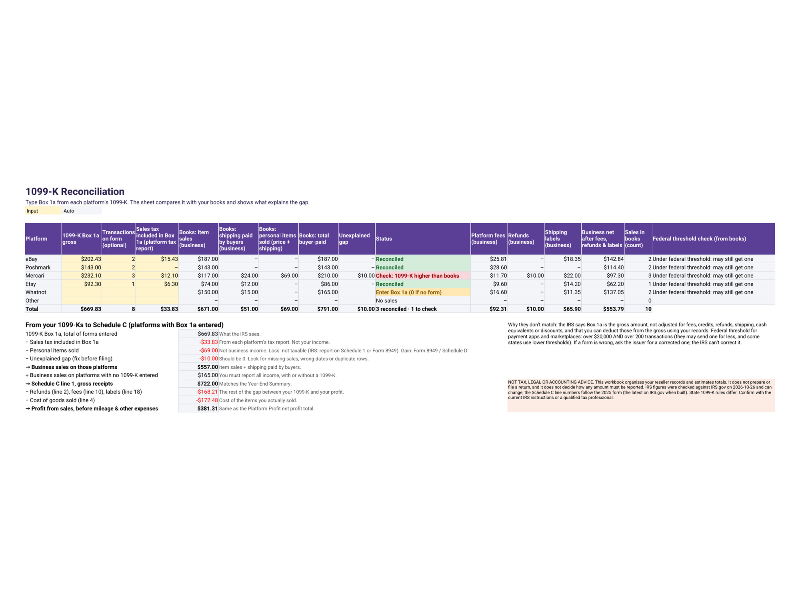
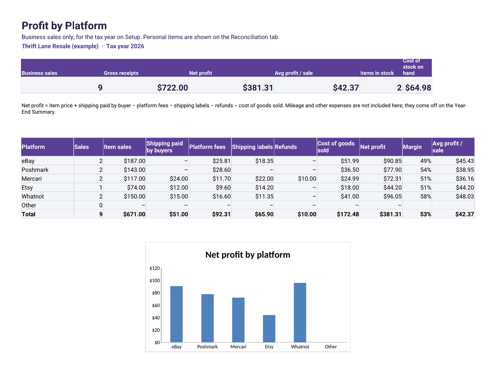
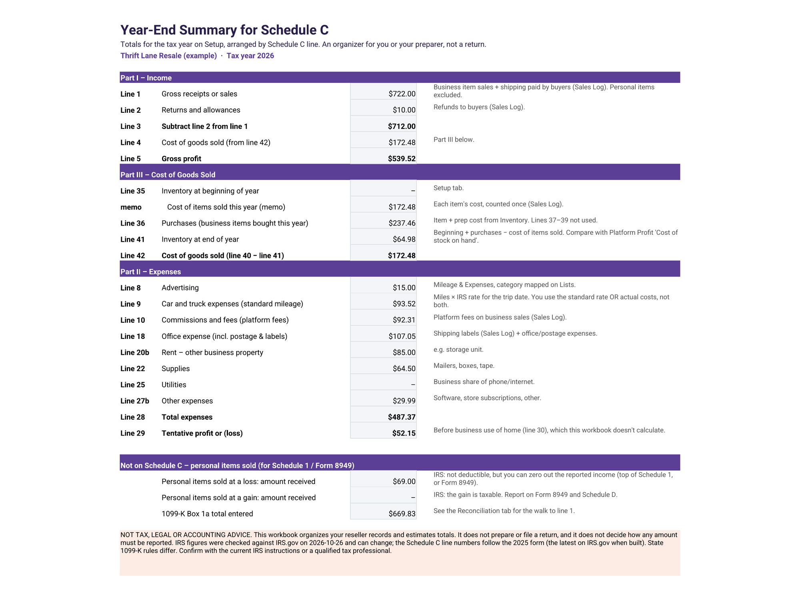

Reseller Profit and Your 2026 Form 1099-K: How to Reconcile eBay, Poshmark, Mercari and Whatnot
Not tax, legal or accounting advice. This guide is general information for US small businesses. IRS figures were checked on IRS.gov on October 27, 2026 and can change. Your situation may differ; confirm with the current IRS instructions or a qualified tax professional before you file.
Resellers on eBay, Poshmark, Mercari and Whatnot often open a Form 1099-K and see a number far bigger than what they actually made. That's expected. The form reports gross payments, and your job is to walk that figure down to real profit with your own records.
Who gets a 1099-K for 2026
Under the One, Big, Beautiful Bill, the threshold for payment apps and online marketplaces reverted: they're required to file a Form 1099-K when your payments for goods or services exceed $20,000 in more than 200 transactions. You may still receive one below that, and some states use lower thresholds (IRS FAQs on the 1099-K threshold). Either way, you must report all income, whether or not you get a form (IRS: Understanding your Form 1099-K).
Why Box 1a is bigger than your profit
The IRS says the gross amount isn't reduced for fees, credits, refunds, shipping, cash equivalents or discounts; you deduct those using your records (IRS: What to do with Form 1099-K). Depending on the platform, marketplace-collected sales tax may also be in the total; check each platform's annual tax report.

Reconcile your 1099-K in five steps
- Start with Box 1a for each platform.
- Subtract sales tax the platform collected and included, if any.
- Separate personal items. A loss on a personal item can't be deducted, but you can zero out the reported amount; a personal item sold at a gain is taxable and goes on Form 8949 and Schedule D (IRS).
- Match business sales (item price plus shipping paid by buyers) to your sales log. Any gap you can't explain is a sign to recheck refunds, cancellations, or timing; if the form itself is wrong, the correction comes from the issuer.
- Deduct the rest on Schedule C: platform fees, shipping labels, refunds, and cost of goods sold.
Profit per item and per platform
Real profit per sale = item price + shipping paid by buyer − platform fees − shipping label − refunds − item cost (including prep). Totaling by platform shows where you actually make money, not just where you sell the most.

Cost of goods sold and inventory
Only the cost of items you actually sold in the year counts as cost of goods sold. Unsold stock is ending inventory that carries into next year. Schedule C Part III works this out: beginning inventory plus purchases, minus ending inventory.
Mileage for sourcing trips
Drives to thrift stores, estate sales and the post office for business can be deducted at the standard mileage rate. For 2026 the IRS business rate is 72.5 cents a mile from January 1 to June 30 and 76 cents a mile from July 1 to December 31 (IRS standard mileage rates). Log the date of each trip so the right rate applies.

FAQ
What is the 2026 Form 1099-K threshold?
Payment apps and online marketplaces must file Form 1099-K when payments for goods or services exceed $20,000 in more than 200 transactions. You may receive one below that, and you must report all income either way. This is general information, not tax advice.
Why is my 1099-K higher than my profit?
Box 1a is the gross amount. It isn't reduced for fees, refunds, shipping, credits or discounts, and it can include personal items and, on some platforms, sales tax. You deduct those using your records.
Do I pay tax on personal items I sold on Poshmark or eBay?
A loss on a personal item isn't deductible, but you can zero out the reported amount. A personal item sold at a gain is taxable and is reported on Form 8949 and Schedule D.
What is the 2026 mileage rate for resellers?
The IRS business standard mileage rate is 72.5 cents per mile for January 1 to June 30, 2026 and 76 cents per mile for July 1 to December 31, 2026.
Let a spreadsheet do the math
The Reseller Profit & 1099-K Tracker logs inventory and sales, calculates profit per item and per platform, reconciles each platform's 1099-K to your books, applies the 2026 split mileage rate and totals everything by Schedule C line. You type the fees from each order, so it stays exact. It organizes records; it doesn't prepare or file a return. Buy it on Etsy or Gumroad.